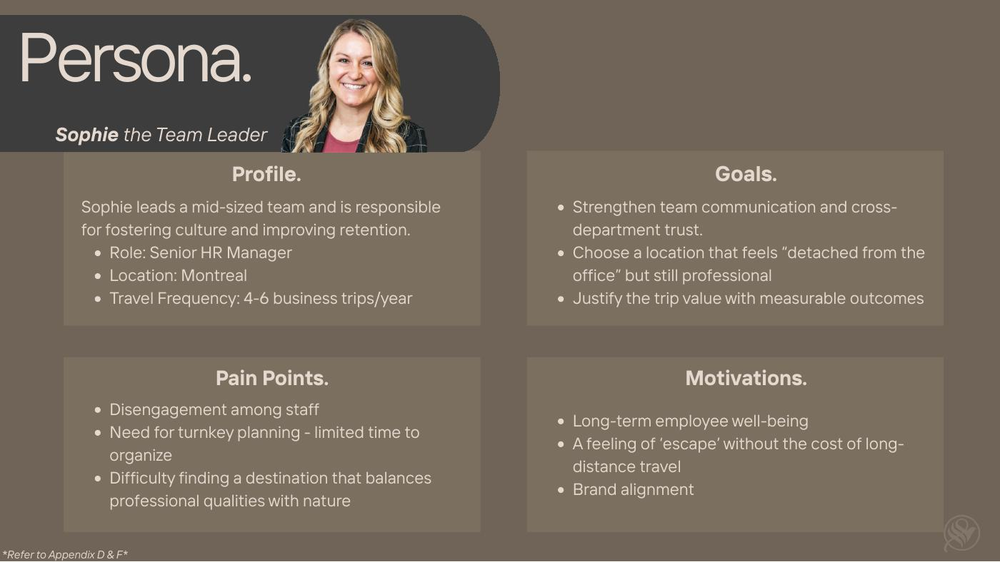
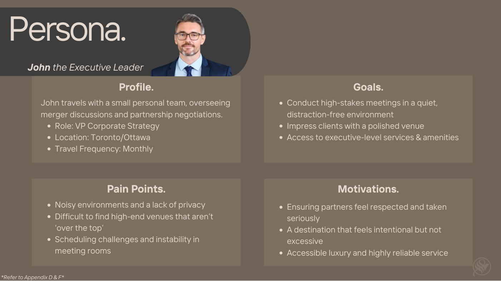
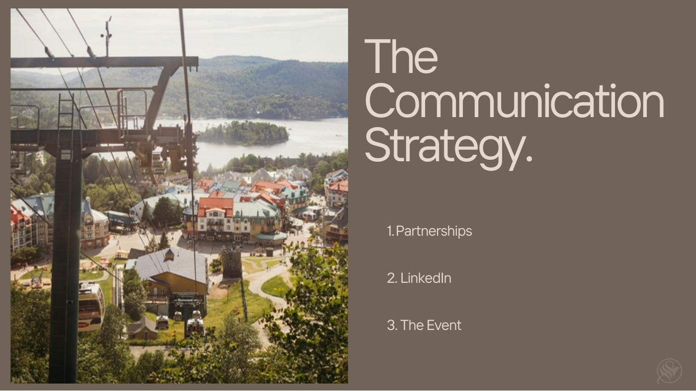
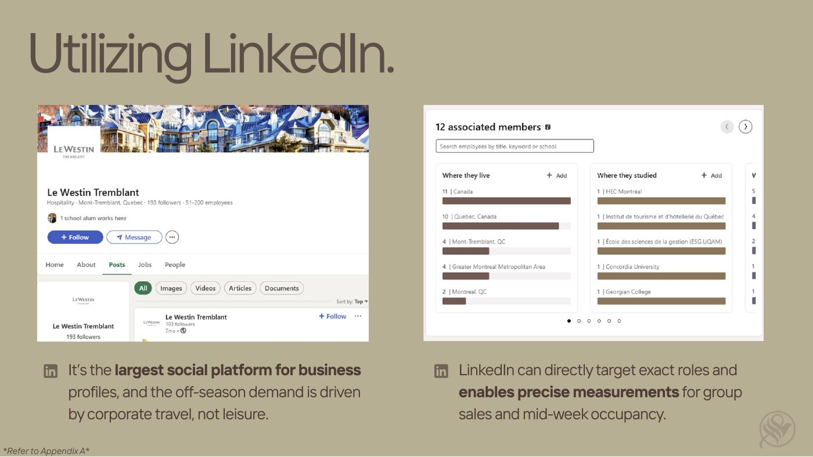
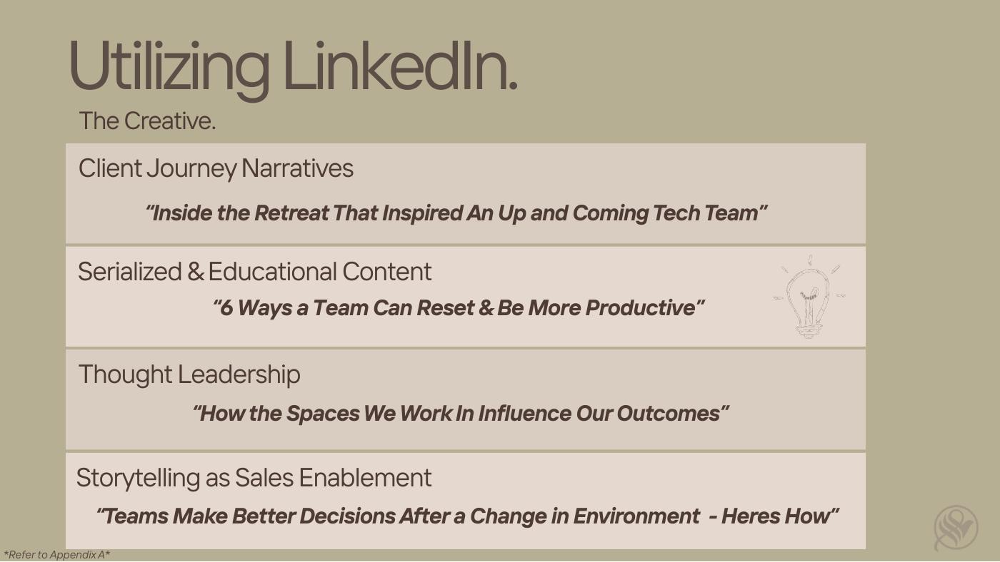
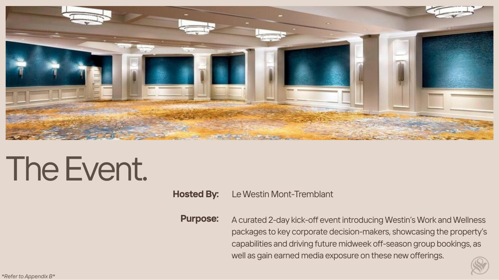
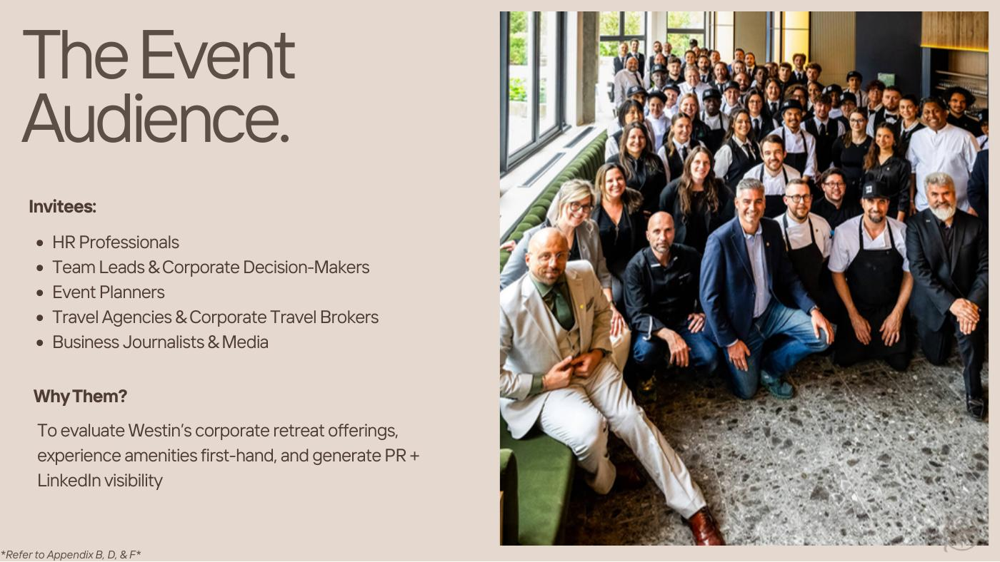
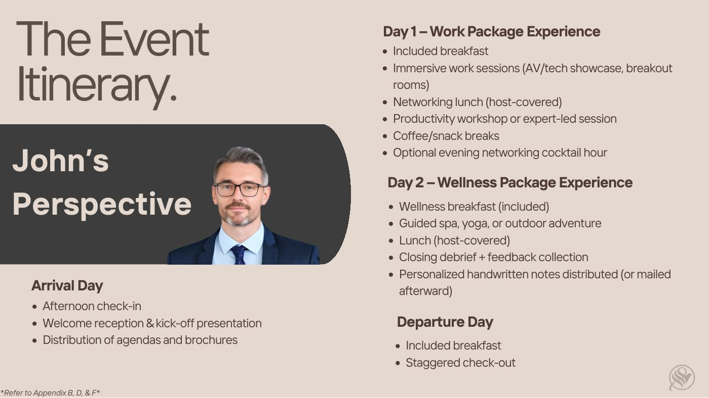
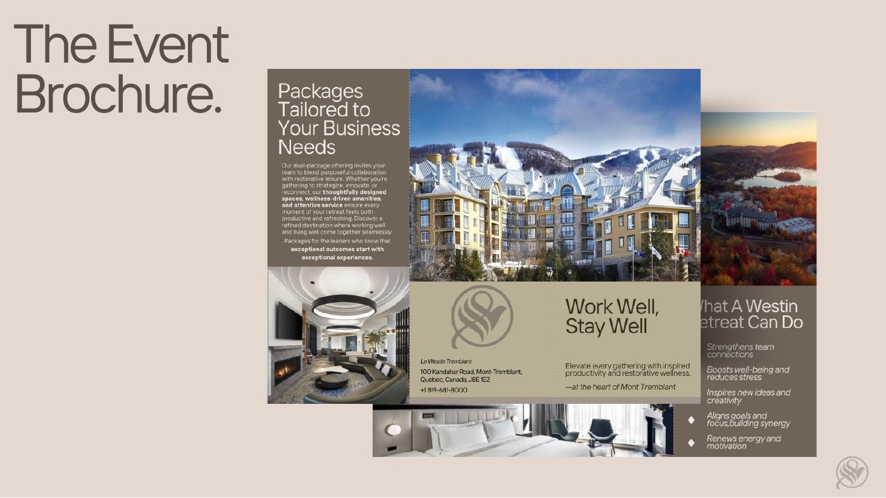
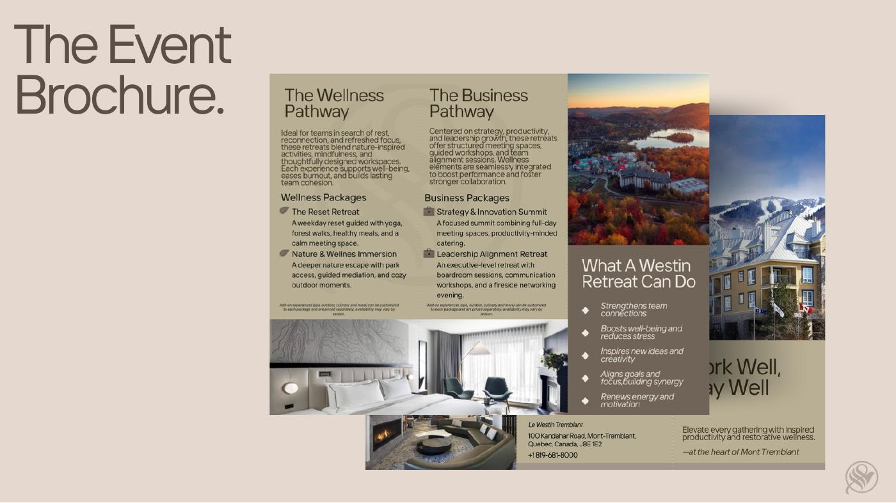

The Corporate Retreat Reimagined at Le Westin Tremblant.
The project focused on increasing Sunday–Thursday off-season occupancy and strengthening Le Westin Tremblant's appeal to corporate travellers.


The communication plan connected corporate targeting with a curated retreat experience.







